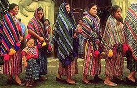

Los cochimíes fueron un pueblo indígena que habitó la península de Baja California, en lo que hoy
es México, desde el norte del actual estado de Baja California hasta la parte media de Baja
California Sur. Su cultura, idioma y forma de vida se desarrollaron en un entorno desértico y
montañoso, lo que influyó en su adaptación y en su estilo de vida nómada.
Los cochimíes vivieron en la península de Baja California, desde el norte, cerca del actual estado de California (EE.UU.), hasta aproximadamente el río San Ignacio en Baja California Sur. Sus territorios eran áridos, con poca vegetación y recursos hídricos escasos, lo que los llevó a desarrollar una forma de vida basada en la recolección y la caza.
El idioma cochimí pertenecía a la familia lingüística yumana-cochimí, que también incluye las lenguas de otros grupos indígenas de la región, como los kumiai, paipai y kiliwa.
Dado que la península de Baja California tiene un clima árido y pocos recursos agrícolas, los cochimíes dependían de una economía de subsistencia, basada en:
Economia |
|
|
 |
Su vivienda consistía en chozas de ramas o refugios temporales de piedra y tierra, adecuados para su estilo de vida nómada.
Los cochimíes tenían una cosmovisión basada en la naturaleza y los espíritus.
Los cochimíes fueron un pueblo indígena adaptado a las duras condiciones del desierto bajacaliforniano. Su cultura basada en la caza, recolección y arte rupestre dejó huellas importantes en la historia de México. Aunque su lengua se ha extinguido y su sociedad ya no existe como tal, su legado persiste en los estudios arqueológicos y en la identidad cultural de Baja California.